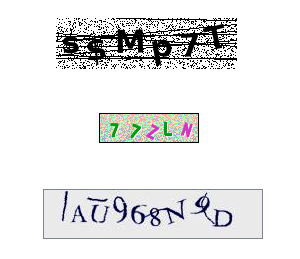

img 태그의 alt 속성으로 대체 텍스트 제공하기

마크업으로 대체 텍스트 제공하기
Container
- display
- flex direction
- flex wrap
- flex flow
- justyfy content,
- align items
- align content
Item
- order
- flex grow
- flex shrink
- flex basis
- flex
- align self
기능이 있는 이미지/배경이미지

페이지 이동
QR코드 이미지
썸네일 이미지
해변
캡차 이미지

사용자가 업로드하는 이미지
사용자가 업로드하는 이미지의 경우 사용자가 직접 대체 텍스트를 작성할 수 있도록 안내와 함께 툴을 제공한다.
사용자가 입력한 내용이 대체 텍스트로 제공되도록 구현한다.